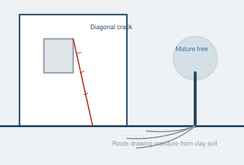

London sits on shrinkable clay that makes subsidence one of the most significant structural risks in the capital — here's what it means for buyers and how a survey catches it early.

Much of London is built on London Clay — a dense, fine-grained soil that shrinks as it dries out and swells as it rehydrates. In hot, dry summers the clay beneath and around a building's foundations can shrink significantly, causing the ground to settle unevenly. Where a building's foundations move with the soil, this is called subsidence; when the ground swells back and pushes upward, it's called heave. Both can cause cracking, and both are more common in London than almost anywhere else in the UK.
Not every crack means subsidence — most are cosmetic, caused by ordinary thermal movement, shrinkage of new plaster, or seasonal expansion and contraction. This is precisely why an experienced surveyor's judgement matters: distinguishing between a cosmetic hairline crack and a structural warning sign takes trained eyes.
During a Level 3 Building Survey, we look for:
Where movement is suspected, we'll recommend further investigation — typically a structural engineer's assessment, and sometimes crack monitoring over several months — rather than guessing at severity from a single visual inspection.
Not necessarily. Many London properties have a documented history of subsidence that was successfully underpinned decades ago and has been stable ever since — this is common and often not a barrier to a mortgage, provided it's disclosed and insured appropriately. What matters is:
Get a free Level 3 Building Survey estimate — we'll assess subsidence risk as standard.
Get QuoteTell us about the property and we'll come back with the right survey level within 24 hours.
All London postcodes and the M25 corridor.
Within 1 working day. Open Monday, Tuesday, Wednesday, Thursday and Friday, 8am–6pm.
Much of London sits on shrinkable clay soil, which expands and contracts with moisture levels, and combined with mature trees and Victorian-era foundations, this makes certain areas more prone to subsidence.
Areas with high clay content and dense tree cover, including parts of south and west London, tend to see more subsidence claims, though any property can be affected depending on local soil and drainage conditions.
Yes, our surveyors look for cracking patterns, door and window misalignment and other signs consistent with subsidence, and will recommend further structural investigation if needed.
It can. Previous subsidence, even if repaired, may affect insurance premiums or require specialist cover, which is worth raising with your broker once a survey has flagged any history.
Yes, mature trees close to a property can draw significant moisture from clay soil, especially during dry summers, increasing the risk of ground movement.
Not necessarily, many London properties have had subsidence repaired and monitored successfully, but it's important to understand the history and any ongoing monitoring requirements before you proceed.